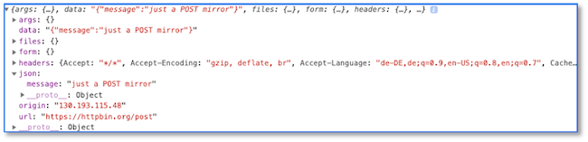

Callbacks und Promises¶
Manche Konzepte sind in JavaScript bzw. TypeScript für Java-Programmiererinnen zunächst ungewöhnlich. Dazu gehören Callbacks und Promises. Diese Konzepte werden hier etwas näher beleuchtet. Zunächst werfen wir jedoch einen Blick auf das asynchrone Verhalten in der Abarbeitung von JavaScript, um die Konzepte zu motivieren.
Wir betrachten folgende JavaScript-Funktion
Diese enthält bereits jeweils ein Beispiel für ein Callback (Zeilen 6-8) und eine Promise (Zeilen 10-19). Uns ist jedoch zunächst etwas anderes wichtig:
- In den Zeilen
3und4deklarieren wir die Variablenaundbund setzen sie ajeweils uf den initialen Wert1. - In den Zeilen
6-8rufen wir diesetTimeout()-Funktion auf und übergeben ihr zwei Parameter: eine anonyme Funktion ohne Parameter, die eine Ausgabe auf die Konsole für den Stringtimeout a =gefolgt von Wert vonaausführt und als zweiten Parameter100Milisekunden. Um diese Zeit soll sich die Ausführung der anaonymen Funktion verzögern. - In der Zeile
10lesen wir mithilfe derfetch()-Funktion eine Ressource. Diese ist unter der URLhttps://jsonplaceholder.typicode.com/postsverfügbar. Zu den Details derthen()-Funktionen kommen wir im Kapitel Promises. Wir sehen jedoch bereits, dass auch darin Konsolenausgaben vorhanden sind (Zeilen12,16und19). - In den Zeilen
21und22erfolgen die Ausgaben der Werte vonaundb. - In Zeile
24setzen wir einen neuen Wert füra, nämlich10.
Frage
Was wird wie in welcher Reihenfolge ausgegeben?
Antwort:
Die ersten Ausgaben auf der Konsole sind:
Offensichtlich werden also zunächst die Zeilen 3 und 4 und anschließend die Zeilen 21 und 22 vollständig abgearbeitet.
Die nächste Ausgabe ist:
Das bedeutet, es wurde zunächst Zeile 24 und erst dann Zeile 7 vollständig abgearbeitet.
Die nächste Ausgabe erfolgt durch die Abarbeitung von Zeile 12, gefolgt von Zeile 16 und dann Zeile 19:
Response {type: 'cors', url: 'https://jsonplaceholder.typicode.com/posts', redirected: false, status: 200, ok: true, …}
body (100) [{…}, {…}, {…}, {…}, {…}, {…}, {…}, {…}, {…}, {…}, {…}, {…}, {…}, {…}, {…}, {…}, {…}, {…}, {…}, {…}, {…}, {…}, {…}, {…}, {…}, {…}, {…}, {…}, {…}, {…}, {…}, {…}, {…}, {…}, {…}, {…}, {…}, {…}, {…}, {…}, {…}, {…}, {…}, {…}, {…}, {…}, {…}, {…}, {…}, {…}, {…}, {…}, {…}, {…}, {…}, {…}, {…}, {…}, {…}, {…}, {…}, {…}, {…}, {…}, {…}, {…}, {…}, {…}, {…}, {…}, {…}, {…}, {…}, {…}, {…}, {…}, {…}, {…}, {…}, {…}, {…}, {…}, {…}, {…}, {…}, {…}, {…}, {…}, {…}, {…}, {…}, {…}, {…}, {…}, {…}, {…}, {…}, {…}, {…}, {…}]
{userId: 1, id: 1, title: 'sunt aut facere repellat provident occaecati excepturi optio reprehenderit', body: 'quia et suscipit\nsuscipit recusandae consequuntur …strum rerum est autem sunt rem eveniet architecto'}
Der entscheidende Punkt hier ist zunächst, dass die vollständige Abarbeitung der Anweisungen nicht sequentiell, d.h. nicht in der Reihenfolge erfolgt, in der sie aufgerufen werden. Vielmehr ist es so, dass einige Anweisungen länger brauchen als andere und dass es somit zum "Überholen" von Anweisungsabarbeitungen kommt.
Der Grund dafür liegt darin begründet, dass die Abarbeitungen von JavaScript-Anweisungen in genau einem Thread erfolgen und Anweisungen, die länger benötigen, in mehrere Einheiten aufgeteilt werden, bis sie irgendwann vollständig abgearbeitet sind.
Wir kommen im Detail darauf beim folgenden Thema Callbacks zu sprechen. Zunächst sei jedoch noch erwähnt, dass die Ausgaben aus den Zeilen 10-19 (Ausgaben in Zeilen 12, 16 und 19) sehr wohl in der aufgeführten Reihenfolge erfolgen. Dies ist genau das Prinzip hinter den Promises. Dort wird sichergestellt, dass die Ausführungsreihenfolge eingehalten bleibt und sich keine Anweisungen "überholen".
Callbacks¶
Zunächst einmal sind Callbacks Funktionen, die anderen Funktionen als Parameter übergeben werden. Wir betrachten folgendes Beispiel:
Wir haben drei Funktionen. Diese werden als anonyme Funktionen definiert, aber die Funktionsdefinitionen werden sofort einer Variablen zugewiesen. Das bedeutet, dass z.B. der Wert der Variablen x die Funktionsdefinition
console.log(x) aufrufen, dann erhalten wir folgende Ausgabe auf der Konsole:
Wenn wir aber x();, also sozusagen, die Variable als Funktion aufrufen, dann wird die Funktion ausgeführt und wir erhalten auf der Konsole die Ausgabe
Wenn wir nun z(x); aufrufen, dann wird die in den Zeilen 9-12 definierte Funktion aufgerufen, wobei der Parameter callback als Wert die Funktionsdefinition von x übergeben wird. In Zeile 11 erfolgt dann mithilfe von callback(); eigentlich der Aufruf x();.
Wir können aber auch z.B. z(y); aufrufen. Dann wird z nicht die Funktion x, sondern die Funktion y übergeben und der Aufruf callback(); in Zeile 11 entspricht somit dem Aufruf y();.
Ein großer Vorteil dieser Callbacks bestehen darin, dass der Aufruf asynchron erfolgt. Schauen wir uns z.B. einmal an, wie die mögliche Ausgabe der Aufrufe
aussehen könnte:Ausgabe der Funktion z - vor Aufruf von callback
Ausgabe der Funktion x
Ausgabe der Funktion z - vor Aufruf von callback
Ausgabe der Funktion z - vor Aufruf von callback
Ausgabe der Funktion y
Ausgabe der Funktion z - vor Aufruf von callback
Wichtig ist, dass Callbacks die aufrufende Funktion nicht blockieren, sondern asynchron ausgeführt werden. Dieses einfache Beispiel soll das demonstrieren:
Wir haben zwei Anweisungen: einesetTimeout()-Anweisung und eine console.log('Ausgabe B');-Anweisung, die nacheinander aufgerufen werden (setTimeout() vor console.log()). Innerhalb der setTimeout()-Anweisung wird eine Funktion als Callback übergeben. Innerhalb dieser Funktion erfolgt der Aufruf von console.log('Ausgabe A');.
Das Ausführen des Programms ergibt folgende Ausgabe:
Die Ausgabe von Ausgabe A erfolgt ca. 3 Sekunden nach Ausgabe B. Das liegt daran, dass die Callback-Funktion asynchron ausgeführt wird und alle weiteren Ausführungen nicht blockiert. Das bedeutet, dass wir mithilfe von Callbacks eine asynchrone Ausführung unseres JavaScript-Codes erreichen. Der einzelne JavaScript-Thread wird also für den Aufruf der Callbacks verwendet und irgendwann sind diese Callback-Aufrufe beendet. Ein gegenseitiges Blockieren findet nicht statt, sondern es bleibt sogar noch Platz für weitere Aufrufe (hellgrüne Bereiche im folgenden Bild):
Das Problem mit diesen Callbacks ist, dass sie sehr schnell sehr unübersichtlich werden. Man spricht von der Callback-Hölle, in der man sehr schnell ist, sobald genügend viele Callbacks asynchron (nebenläufig) ausgeführt werden, diese sogar ineinander verschachtelt sind (Callbacks in Callbacks) und man gar nicht weiß, wann welche Callbacks beendet sind. Sobald man aber erst die Ausführung eines Callbacks abwarten muss, weil man die Resultate dieses Callbacks weiterverarbeiten möchte, entstehen wieder synchrone Aufrufe und der Vorteil der asynchronen Abarbeitung ist dahin. Um dieses Problem zu lösen, wurden Promises entwickelt.
Promises¶
Ein Promise ist zunächst einmal ein JavaScript-Objekt. Es enthält einerseits den Code zum Erzeugen eines Promise-Objektes (producing code) und anderseits auch den Code zum Verarbeiten eines solchen Promise-Objektes (consuming code). Dabei können zwei Sachen verarbeitet werden:
- entweder das
Promise-Objekt wurde erfolgreich abgearbeitet (resolve) oder - das
Promise-Objekt wurde nicht erfolgreich abgearbeitet (reject).
Die allgemeine Syntax eines solchen Promise-Objektes sieht so aus (siehe z.B. w3scool):
Betrachten wir das obere Beispiel genauer:
- in Zeile
1erstellen wir eine VariablemyPromise, die wir natürlich nennen können, wie wir möchten - diese Variable zeigt auf ein
Promise-Objekt, das ebenfalls in Zeile1mithilfe vonnewund dem Aufruf des Konstruktors erzeugt wird - einem
Promise-Objekt (dem Konstruktor) wird immer eine Funktion übergeben, der wiederum zwei Callback-Funktionen als Parameter übergeben werden - die erste Callback-Funktion, die hier
myResolveheißt (aber meistens nurresolve), wird aufgerufen, wenn dasPromise-Objekt erfolgreich abgearbeitet wurde (Zeile4) - die zweite Callback-Funktion, die hier
myRejectheißt (aber meistens nurreject), wird aufgerufen, wenn dasPromise-Objekt nicht erfolgreich abgearbeitet wurde (Zeile5) -
den Aufruf des
promise-Objektes sehen wir in Zeile9. EinPromise-Objekt durchläuft durch den Aufruf 2 der folgenden 3 Zustände:pending: dasPromise-Objekt wird abgearbeitet und hat noch kein Resultat (undefined),fulfilled: dasPromise-Objekt wurde erfolgreich abgearbeitet und liefert den entsprechenden Resultatwert zurück oderrejected: dasPromise-Objekt wurde nicht erfolgreich abgearbeitet und liefert einError-Objekt zurück
-
es gibt aber keine Möglichkeiten, auf diese Zustände eines
Promise-Objektes zuzugreifen und auch nicht direkt auf den Resultatwert oder das Fehlerobjekt; stattdessen muss eine entsprechende Funktion desPromise-Objektes aufgerufen werden, die selbst wieder einPromise-Objekt zurückgibt, nämlichthen() - der Aufruf von
then()ist ebenfalls in Zeile9gezeigt; diese Funktion hat zwei Parameter: dem ersten Parameter wird der Resultatwert übergeben (wenn dasPromise-Objekt denfulfilled-Zustand erreicht hat) und dem zweiten Parameter wird das Fehlerobjekt übergeben (wenn dasPromise-Objekt denrejected-Zustand erreicht hat). Beide Parameter sind wiederum Callbacks.
Wir werden sehen, dass wir den rejected-Zustand auch mit catch() abfangen können, aber dazu kommen wir später. Zunächst noch einmal zur Vertiefung unser obiges Callback-Beispiel mit setTimeout() als Promise:
Die Ausgabe in Zeile 14 hat nichts mit dem Promise zu tun, aber wir lassen sie mal im Code, um das gleiche Beispiel wie oben zu haben. Es erfolgt zunächst die Ausgabe Ausgabe B auf der Konsole und 3 Sekunden später die Ausgabe resolve -- Ausgabe A. Rein funktional hat sich also nichts geändert. Wie Sie den Parameter für den resolve-Fall (und dann auch für den reject-Fall) nennen, bleibt ganz Ihnen überlassen; hier value (Zeile 8).
Dieses Mal heißt unser Promise-Objekt promise und die beiden Callback -Funktionen resolve und reject (Zeile 1). Der producing code enthält nur die Implementierung von resolve. In dem Beispiel gibt es also (noch) kein reject. In den Zeilen 7-12 sehen wir den consuming code der Promise, auch hier wieder nur für resolve. Es erfolgt die Ausgabe des Wertes, den resolve übergeben hat.
Promises in Arrow-Notation¶
Weil wir es mitlerweile häufig sehen und weil wir uns auch angewöhnen wollen, diese selbst zu benutzen, hier das gleiche Beispiel nochmal in Arrow-Notation:
Es ist auch noch zu erwähnen, dass Sie nur selten selbst Promises erstellen, sondern diese viel häufiger nutzen werden. Das heißt, Sie werden nicht so häufig producing code, sondern viel häufiger consuming code schreiben. Beispielsweise gibt die Registrierung eines service workers ein Promise zurück:
Ein großer Vorteil von Promises ist, dass Sie die Verarbeitung verketten können. Die then()-Funktion liefert selbst wieder ein Promise zurück, so dass Sie erneut dieses Promise mit then() behandeln können. Wir kommen darauf in den Anwendungen nochmal zurück.
Der reject-Fall¶
Wir schauen uns jetzt an, wie wir den Fall am besten behandeln, wenn das Promise nicht in den fulfilled, sondern in den rejected-Zustand übergeht, wenn also nicht resolve, sondern reject ausgeführt wird. Wir ändern unser Beispiel einmal entsprechend:
Wir haben also Zeile 3 auskommentiert (resolve) und stattdessen reject eingefügt (Zeile 4). Im Gegensatz zu resolve geben wir jetzt mal keinen einfachen string, sondern ein JavaScript-Objekt zurück (erkennbar an { }). Wir sind darin völlig frei, was zurückgegeben wird, aber es bietet sich an, ein Error-Objekt zu erzeugen. Die then()-Behandlung des Promise-Objekt lassen wir zunächst unverändert (Zeilen 8-13).
Wenn wir diesen Code ausführen, dann wird erneut Ausgabe B ausgegeben (Zeile 15 - hat nichts mit dem Promise zu tun), aber nach 3 Sekunden erfolgt keine Ausgabe auf der Konsole, sondern stattdessen erscheint auf der Konsole:

Error-Behandlung in der then()-Funktion¶
Wir behandeln den geworfenen Fehler nicht, da wir in unserer then()-Behandlung bis jetzt nur den resolve-Fall behandeln (Zeilen 9-11). Das ändern wir nun:
In den Zeilen 12-14 wurde die Behandlung des Fehlerfalls hinzugefügt (beachten Sie auch das zusätzliche Komma in Zeile 11). Wie Sie die Variable err nennen, bleibt Ihnen überlassen. Sie bekommt den Wert, den das Promise für den reject-Fall übergibt, in unserem Beispiel also ein JavaScript-Objekt:
weil wir das in Zeile 4 so definiert haben. Wir greifen also auf die Werte der Schlüssel code und message zu und lassen diese auf die Konsole ausgeben (Zeile 13). Auf der Konsole erscheint 3 Sekunden nach der Ausgabe Ausgabe B die Ausgabe 500 An error occurred.
Error-Behandlung im catch()-Block¶
Es ist ungewöhnlich, den Fehlerfall in der then()-Funktion zu behandeln, obwohl es, wie wir gesehen haben, möglich ist. Stattdessen verwendet man für den Fehlerfall besser catch():
Das Abfangen des Fehlerfalls mithilfe von catch() hat den Vorteil, dass wir zunächst beliebig viele then()-Verkettungen durchführen können und egal, in welchem then() ein Fehler auftritt, wir fangen ihn mit catch() (am Ende) auf. Würden wir in jedem then() auch noch den jeweiligen Fehler behandeln, wäre der Code noch viel unübersichtlicher (als er sowieso schon ist). Die Unübersichtlichkeit der then()-Verkettungen hat zu folgender Entwicklung geführt:
async/await¶
Die Verkettung von .then()-Pfaden kann zu unübersichtlichem Code führen. Deshalb wurden die Schlüsselwörter async und await eingeführt (siehe z.B. hier, hier, hier oder hier).
Wir betrachten ein Beispiel, das wir zunächst mit .then()-Verkettung anwenden und danach mit async/await. gegeben sind die beiden folgenden JavaScript-Funktionen:
function makeRequest(file) {
return new Promise( (resolve, reject) => {
console.log('making request for ' + file);
if(file == 'index.html') {
resolve('index.html exists')
} else {
reject(file + ' does not exist')
}
});
}
function processRequest(response) {
return new Promise( (resolve, request) => {
console.log('processing response');
resolve('processing done for ' + response)
})
}
Die Anwendung dieser Funktionen könnte wie folgt aussehen:
makeRequest('index.html') // resolve-Fall
.then( response => {
console.log('response received');
console.log(response)
return processRequest(response)
})
.then( processedResponse => {
console.log(processedResponse)
})
.catch( error => console.log(error))
erzeugt folgende Ausgabe:
making request for index.html
response received
index.html exists
processing response
processing done for index.html exists
bzw., wenn der übergebene Dateiname nicht index.html entspricht:
makeRequest('index1.html') // rectect-Fall
.then( response => {
console.log('response received');
console.log(response)
return processRequest(response)
})
.then( processedResponse => {
console.log(processedResponse)
})
.catch( error => console.log(error))
erzeugt folgende Ausgabe:
Dem Aufruf von makeRequest() (und auch dem von processRequest()) könnten wir jedoch auch das Schlüsselwort await voranstellen. Dabei ist jedoch zu beachten, dass Aufrufe von await nur in als async deklarierten Funktionen erfolgen kann. Wir bauen deshalb obige Aufrufe in einer JavaScript-Funktion nach:
async function testPromises() {
try {
let response = await makeRequest('index1.html'); // reject-Fall
console.log('response received');
let processedResponse = await processRequest(response);
console.log(processedResponse);
} catch(error) {
console.log(error)
}
}
bzw.
async function testPromises() {
try {
let response = await makeRequest('index.html'); // resolve-Fall
console.log('response received');
let processedResponse = await processRequest(response);
console.log(processedResponse);
} catch(error) {
console.log(error)
}
}
Dies erzeugt jeweils die gleichen Ausgaben wie oben gezeigt. Generell ist die Verwendung von async/await oft übersichtlicher als then()-Verkettungen. Das Konzept async/await verliert etwas an Übersichtlichkeit, wenn Fehler abgefangen werden (dann im try/catch-Block).
Fetch API¶
Die Fetch API bietet einen bequemeren und leistungsfähigeren Ersatz für XMLHttpRequest. Es geht also darum, Ressourcen vom Web-Server zu holen (to fetch). Die Fetch API ist vollständig auf Promises aufgebaut. Die zentrale Methode der Fetch API ist fetch(). Das Gute an dieser Methode ist, dass sie gloabl ist im Sinne, dass sie nicht nur von einer Webanwendung selbst, sondern auch z.B. von einem Service Worker verwendet werden kann (sie ist im WindowOrWorkerGlobalScope). Einführungen zu fetch() finden Sie z.B. hier, hier oder hier.
GET-Anfragen mit fetch()¶
Wir starten mit einem einfachen Beispiel und nutzen dafür https://httpbin.org, eine Webseite, die viele REST-Endpunkte zum Ausprobieren anbietet. Nach dem Öffnen dieser Seite im Browser, können Sie z.B. mal auf Request inspection klicken - dort sehen wir den Endpunkt /ip, den wir über ein GET abfragen werden:
Wir rufen also einmal fetch() auf und übergeben dieser Funktion den Endpunkt, von dem eine Ressource geholt werden soll. Die fetch()-Funktion liefert ein Promise-Objekt zurück. Deshalb können wir auch direkt die then()-Funktion aufrufen und die response (ist egal, wie Sie diesen Parameter nennen) auf die Konsole ausgeben. Wenn wir diesen Code ausführen, erscheint in der Konsole:

Wir bekommen also ein JavaScript-Objekt zurück. Wirklich interessiert sind wir aber hauptsächlich an dem body dieses Objektes. Um darauf geeignet zuzugreifen, konvertieren wir das Objekt zunächst in das JSON-Format mithilfe der Anweisung response.json();. Die json()-Funktion ist eine Standard-JavaScript-Funktion, welche ein JavaScript-Objekt in einen JSON umwandelt. Da then() selbst ein Promise-Objekt zurückgibt. wollen wir darauf then() erneut anwenden, um das Prinzip verketteter then()-Funktionen (verketteter asynchroner Verarbeitungen) zu zeigen:
In der ersten then()-Funktion (Zeilen 2-6) wird also die Response der asynchronen GET https://httpbin.org/ip-Anfrage behandelt und darin wird diese Response in eine JSON umgewandelt (Zeile 4). Die Rückgabe dieser then()-Funktion ist erneut ein Promise. Für dieses Promise ist die zweite then()-Funktion (Zeilen 7-11). Diese Funktion behandelt das asynchrone Streamen des Response-Body und dessen Umwandlung in ein JSON. Das durch dieses Promise zurückgegebene resolve bezeichnen wir in unserem Beispiel als data und geben es auf die Konsole aus. Auf der Konsole erscheint die IP, von der die Anfrage erfolgte, z.B.
Noch zwei kleine Verbesserungen am Code: wenn in der Arrow-Notation Ihre Funktion nur aus einer einzigen return-Anweisung besteht, dann können Sie die geschweiften Klammern Ihres Funktionskörpers weglassen und auch das return. D.h. aus
return-Anweisungen, nicht z.B. wenn die Funktion nur aus einer einzigen Konsolenausgabe besteht. Außerdem sollten wir auch noch ein catch()-Block einfügen, für den Fall, dass ein Fehler auftritt:
Den Fehlerfall können Sie ausprobieren, indem Sie einfach einen Fehler in die URL einbauen.
POST-Anfragen mit fetch()¶
POST-Anfragen werden verwendet, um Daten an den Webserver zu senden. Typischerweise sind das Formulardaten, die z.B. in eine Datenbank eingefügt werden sollen. Wenn wir also mithilfe von fetch() eine POST-Anfrage stellen wollen, dann müssen wir zwei Dinge beachten:
- wir müssen
fetch()explizit mitteilen, dass die verwendete HTTP-Anfrage-MethodePOSTist und - wir müssen die Daten mitschicken.
Für ein einfaches Beispiel verwenden wir erneut https://httpbin.org, dieses Mal aber den Endpunkt /post, der uns einfach die gesendeten Daten wieder als Response unserer Abfrage zurückschickt, also einfach als "Spiegel" fungiert. Eine entsprechende fetch()-Anweisung könnte so aussehen:
Die Zeilen 11-23 sind dabei zunächst unverändert geblieben und sehen genauso aus wie die Zeilen 2-14 aus dem obigen GET-Beispiel. Nur die Parameter in der fetch()-Funktion haben sich geändert. Der erste Parmeter lautet nun 'https://httpbin.org/post', da wir die Anfrage an diese URL (diesen Endpunkt) stellen. Hinzugekommen ist ein zweiter Parameter, ein JSON:
{
method: 'POST',
headers: {
'Content-Type': 'application/json',
'Accept': 'application/json'
},
body: JSON.stringify({
message: 'just a POST mirror'
})
}
darin legen wir zunächst mithilfe von method die HTTP-Anfrage-Methode fest. Standard ist GET, deshalb brauchten wir das in unserem ersten Beispiel nicht zu tun. Nun geben wir POST an.
Außerdem definieren wir noch Eigenschaften für den header. Wir legen mithilfe von Content-Type fest, welches Format unsere Daten haben, die wir übermitteln, nämlich application/json. Außerdem legen wir mithilfe von Accept fest, in welchem Format wir die Daten empfangen wollen, nämlich ebenfalls im JSON-Format. Diese Accept-Angabe ist nicht immer notwendig. Die meisten REST-Endpunkte liefern so oder so ein JSON zurück. Das hängt von der Definition der REST-API ab.
In der body-Eigenschaft definieren wir die Daten, die wir übertragen wollen. In diesem Fall im JSON-Format. { message: 'just a POST mirror' } ist ein JavaScript-Objekt, das eine einzige Eigenschaft enthält, nämlich message. Mithilfe der JavaScript-Standardfunktion JSON.stringify() wandeln wir dieses JavaScript-Objekt in ein JSON um. Somit wird ein JSON versendet, genau wie wir es im header unter Content-Type angegeben haben.
Führen wir diesen Code aus, erhalten wir auf der Konsole folgende Ausgabe:

Man könnte jetzt meinen, dass der Zugriff auf das Response-JSON ({message: "just a POST mirror"}) einfach über response.data oder über response.json erfolgen kann. Dem ist aber nicht so, da es sich bei dem body der response um ein Objekt vom Typ ReadableStream handelt. Das ist einerseits gut, denn die Daten vom Server werden asynchron als Stream empfangen, andererseits ist der Zugriff auf die Daten recht aufwendig. Sie können Sie dazu hier oder hier oder hier ausführlich informieren.
Success
Wir kennen nun Promises und die Fetch API und können beides anwenden. Wir werden Promises von nun an permanent verwenden. Insbesondere den consuming code für Promises, als .then().catch(). Mithilfe der Fetch API werden wir alle HTTP-Anfragen an den Server stellen können, also GET, POST, PUT und DELETE und dabei das asynchrone Prinzip dieser API bestmöglich ausnutzen.